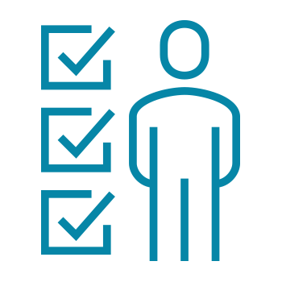

Como parte dos requisitos para obter o badge deste curso, você estudará diferentes lições práticas como esta. Explore detalhadamente cada uma das partes que compõe a prática e role para baixo para finalizá-la
Parte 1
Comportamentos e atitudes de resiliência e adaptabilidade
Em um mundo em constante transformação, seja no ambiente do trabalho ou na sociedade, onde as mudanças são muitas vezes imprevisíveis e os desafios crescem a todo momento, reflita: como podemos demonstrar adaptabilidade e resiliência para inspirar pessoas e alcançar resultados esperados? Pense: quais são as atitudes ou comportamentos que demonstram resiliência e adaptabilidade?
O líder de uma equipe, por exemplo, demonstra comportamentos e atitudes de adaptabilidade e resiliência ao reagir proativamente a mudanças e incertezas, mantendo a calma e o foco na resolução de problemas. Ele demonstra flexibilidade ao ajustar as estratégias conforme necessário, e ao encorajar sua equipe a fazer o mesmo, promove um ambiente de aprendizado contínuo e desenvolvimento constante. O mesmo pode ser dito para uma pessoa que compõe um grupo de trabalho ou de estudos: suas habilidades de resiliência e adaptabilidade são mobilizadas à medida que se deparam com situações que demandam coragem para enfrentar desafios complexos, flexibilidade para mudar as estratégias traçadas ou ao receberem um feedback contrário às suas expectativas. As atitudes de resiliência e adaptabilidade podem ser vistas em pessoas que demonstram uma autogestão emocional em momentos de tensão, e enfrentam proativamente os desafios mais complexos em seu dia a dia. Seja no trabalho, nos estudos ou na vida cotidiana, a resiliência se manifesta na capacidade de enfrentar adversidades sem perder a motivação, enquanto a adaptabilidade aparece como habilidade de incorporar novas ideias e lidar positivamente com as mudanças. As alterações no cenário em que estamos inseridos não precisam ser somente um novo obstáculo, é possível vê-las como oportunidades.

Parte 1
Flexibilidade
Flexibilidade é uma habilidade que pode ser observada em diversas situações do nosso cotidiano, nos estudos, no trabalho, e até mesmo no convívio com amigos e a família. Por exemplo, uma pessoa está no trânsito, se depara com um bloqueio inesperado que a obriga a encontrar uma rota alternativa, ou então, a flexibilidade aparece quando alguém reorganiza sua agenda para atender a uma necessidade urgente ou ao adotar uma nova tecnologia/conhecimento para facilitar tarefas diárias, mesmo que isso exija sair de sua zona de conforto.
Do ponto de vista da Psicologia, ela é amplamente reconhecida como uma habilidade essencial para o bem-estar emocional e para o desenvolvimento / crescimento pessoal. Trata-se da capacidade de ajustar pensamentos, emoções e comportamentos diante de mudanças ou desafios, permitindo às pessoas enfrentarem situações complexas e incertas de forma eficaz. Neste sentido, torna-se a habilidade fundamental para resolver problemas e evitar padrões rígidos de pensamento, associando-a à resiliência e ao otimismo, primordiais para lidar com adversidades e encontrar oportunidades de crescimento.
De maneira geral, a Psicologia enfatiza que a flexibilidade vai além de simplesmente se adaptar; ela envolve um equilíbrio entre preservar valores fundamentais e ajustar-se de maneira prática e criativa às demandas do ambiente. Esta habilidade é vista como um pilar para a saúde mental, o fortalecimento de relações interpessoais e o sucesso em um mundo em constante transformação.
Imagine um grupo de estudantes que está realizando um projeto ou trabalho de uma disciplina, com papéis para cada um e o prazo de entrega já estipulado. No entanto, um dos estudantes se transfere para outra universidade e não poderá concluir a parte que lhe cabia no trabalho. Neste caso, os membros do grupo demonstram flexibilidade ao reorganizar os papéis de cada um, atribuindo-lhes novas tarefas para que todos ajudem a cobrir as lacunas deixadas pelo ex-colega, ajustando o cronograma sem comprometer a qualidade do trabalho.
A flexibilidade também pode aparecer quando estamos abertos a aproveitar oportunidades. Imagine que a faculdade em que você estuda esteja atenta às demandas do mercado profissional e tenha detectado que as habilidades de manejo de inteligências artificiais generativas (como o Chat GPT) seja uma habilidade altamente em foco para os próximos anos e, por isso, são oferecidos cursos extras para os estudantes interessados. Neste caso, ser flexível significaria matricular-se no curso, abraçando o desenvolvimento de novos conhecimentos, ainda que estes não sejam obrigatórios em seu curso.
Atitudes como estas transformam as mudanças, inicialmente vistas como desafios, em oportunidades. Flexibilidade, portanto, é a capacidade de adaptar-se a novas situações e desafios, mantendo o foco em soluções práticas e eficientes.
Instruções: Agora é a sua vez! Para revisar o conteúdo da parte 2, leia as perguntas e responda-as em suas respectivas caixas de texto indicadas. Em seguida, clique no botão “Exemplo de resposta” para ver uma breve sugestão de resolução e, após a leitura, feche a janela para trabalhar com outros cenários.
Parte 1
Flexibilidade
Flexibilidade é uma habilidade que pode ser observada em diversas situações do nosso cotidiano, nos estudos, no trabalho, e até mesmo no convívio com amigos e a família. Por exemplo, uma pessoa está no trânsito, se depara com um bloqueio inesperado que a obriga a encontrar uma rota alternativa, ou então, a flexibilidade aparece quando alguém reorganiza sua agenda para atender a uma necessidade urgente ou ao adotar uma nova tecnologia/conhecimento para facilitar tarefas diárias, mesmo que isso exija sair de sua zona de conforto.
Do ponto de vista da Psicologia, ela é amplamente reconhecida como uma habilidade essencial para o bem-estar emocional e para o desenvolvimento / crescimento pessoal. Trata-se da capacidade de ajustar pensamentos, emoções e comportamentos diante de mudanças ou desafios, permitindo às pessoas enfrentarem situações complexas e incertas de forma eficaz. Neste sentido, torna-se a habilidade fundamental para resolver problemas e evitar padrões rígidos de pensamento, associando-a à resiliência e ao otimismo, primordiais para lidar com adversidades e encontrar oportunidades de crescimento.
De maneira geral, a Psicologia enfatiza que a flexibilidade vai além de simplesmente se adaptar; ela envolve um equilíbrio entre preservar valores fundamentais e ajustar-se de maneira prática e criativa às demandas do ambiente. Esta habilidade é vista como um pilar para a saúde mental, o fortalecimento de relações interpessoais e o sucesso em um mundo em constante transformação.
Imagine um grupo de estudantes que está realizando um projeto ou trabalho de uma disciplina, com papéis para cada um e o prazo de entrega já estipulado. No entanto, um dos estudantes se transfere para outra universidade e não poderá concluir a parte que lhe cabia no trabalho. Neste caso, os membros do grupo demonstram flexibilidade ao reorganizar os papéis de cada um, atribuindo-lhes novas tarefas para que todos ajudem a cobrir as lacunas deixadas pelo ex-colega, ajustando o cronograma sem comprometer a qualidade do trabalho.
A flexibilidade também pode aparecer quando estamos abertos a aproveitar oportunidades. Imagine que a faculdade em que você estuda esteja atenta às demandas do mercado profissional e tenha detectado que as habilidades de manejo de inteligências artificiais generativas (como o Chat GPT) seja uma habilidade altamente em foco para os próximos anos e, por isso, são oferecidos cursos extras para os estudantes interessados. Neste caso, ser flexível significaria matricular-se no curso, abraçando o desenvolvimento de novos conhecimentos, ainda que estes não sejam obrigatórios em seu curso.
Atitudes como estas transformam as mudanças, inicialmente vistas como desafios, em oportunidades. Flexibilidade, portanto, é a capacidade de adaptar-se a novas situações e desafios, mantendo o foco em soluções práticas e eficientes.
Parte 1
Flexibilidade
Flexibilidade é uma habilidade que pode ser observada em diversas situações do nosso cotidiano, nos estudos, no trabalho, e até mesmo no convívio com amigos e a família. Por exemplo, uma pessoa está no trânsito, se depara com um bloqueio inesperado que a obriga a encontrar uma rota alternativa, ou então, a flexibilidade aparece quando alguém reorganiza sua agenda para atender a uma necessidade urgente ou ao adotar uma nova tecnologia/conhecimento para facilitar tarefas diárias, mesmo que isso exija sair de sua zona de conforto.
Do ponto de vista da Psicologia, ela é amplamente reconhecida como uma habilidade essencial para o bem-estar emocional e para o desenvolvimento / crescimento pessoal. Trata-se da capacidade de ajustar pensamentos, emoções e comportamentos diante de mudanças ou desafios, permitindo às pessoas enfrentarem situações complexas e incertas de forma eficaz. Neste sentido, torna-se a habilidade fundamental para resolver problemas e evitar padrões rígidos de pensamento, associando-a à resiliência e ao otimismo, primordiais para lidar com adversidades e encontrar oportunidades de crescimento.
De maneira geral, a Psicologia enfatiza que a flexibilidade vai além de simplesmente se adaptar; ela envolve um equilíbrio entre preservar valores fundamentais e ajustar-se de maneira prática e criativa às demandas do ambiente. Esta habilidade é vista como um pilar para a saúde mental, o fortalecimento de relações interpessoais e o sucesso em um mundo em constante transformação.
Imagine um grupo de estudantes que está realizando um projeto ou trabalho de uma disciplina, com papéis para cada um e o prazo de entrega já estipulado. No entanto, um dos estudantes se transfere para outra universidade e não poderá concluir a parte que lhe cabia no trabalho. Neste caso, os membros do grupo demonstram flexibilidade ao reorganizar os papéis de cada um, atribuindo-lhes novas tarefas para que todos ajudem a cobrir as lacunas deixadas pelo ex-colega, ajustando o cronograma sem comprometer a qualidade do trabalho.
A flexibilidade também pode aparecer quando estamos abertos a aproveitar oportunidades. Imagine que a faculdade em que você estuda esteja atenta às demandas do mercado profissional e tenha detectado que as habilidades de manejo de inteligências artificiais generativas (como o Chat GPT) seja uma habilidade altamente em foco para os próximos anos e, por isso, são oferecidos cursos extras para os estudantes interessados. Neste caso, ser flexível significaria matricular-se no curso, abraçando o desenvolvimento de novos conhecimentos, ainda que estes não sejam obrigatórios em seu curso.
Atitudes como estas transformam as mudanças, inicialmente vistas como desafios, em oportunidades. Flexibilidade, portanto, é a capacidade de adaptar-se a novas situações e desafios, mantendo o foco em soluções práticas e eficientes.



Parte 4
Gerenciando emoções
Outro importante comportamento de pessoas resilientes e adaptáveis é a capacidade de autogestão ou regulação das próprias emoções. Claro que em muitos momentos da vida, enfrentamos situações em que as emoções transbordam, isso é normal, muitas vezes uma atitude saudável e necessária. No entanto, em outros momentos, sobretudo em contextos de convívio com demais pessoas ou em ambientes de interação, como em grupos de estudo, estratégias são necessárias para mobilizar as nossas capacidades de gerenciar as próprias emoções, a fim de sermos resilientes e adaptáveis frente a situações desafiadoras, mudanças e demais adversidades enfrentadas ao longo da vida.
Imagine uma situação em que você foi informado de que deverá fazer uma apresentação inesperada em uma palestra na "semana de tecnologia da sua universidade" em substituição a um colega de turma, que, infelizmente, apresentou problemas de saúde.
Este tipo de situação pode gerar um nervosismo, ansiedade e, para algumas pessoas, até mesmo medo. Em situações como estas, a autogestão de nossas emoções é um fator muito importante. Cada indivíduo tem as suas próprias inseguranças, mas também “seus próprios dispositivos” de como lidar com elas. Para alguns, na situação descrita acima, bastaria uma revisão detalhada da apresentação e uma força tarefa para inserir as últimas informações. Para outros, treinar a apresentação com colegas seria algo que ajudaria a ganhar confiança.
O importante é que você possa refletir sobre o que se pode fazer para melhor gerir as suas emoções como insegurança, nervosismo, entre outras. Alguns exemplos: afastar-se da situação por alguns minutos para depois observá-la com um olhar mais calmo, conversar com seu professor orientador sobre seu receio quanto ao tempo de preparo para a apresentação, obter feedback de um colega de confiança, pesquisar em sites especializados (de fontes confiáveis) para obter maiores informações, reorganizar as atividades para priorizar a demanda ou situação que lhe causa preocupação e, claro, se necessário, buscar ajuda em sua rede de suporte ou com um profissional da saúde mental como um psicólogo, por exemplo.
Situações que demandam uma autogestão emocional são muito recorrentes por isso. O desenvolvimento de estratégias e práticas de autogestão emocional são um importante fator para enfrentarmos estes problemas. Imagine que na referida situação da apresentação repentina, você tenha conseguido identificar como lidar com a sensação inicial de insegurança em realizar a apresentação ao estudá-la, treiná-la e revisá-la com um colega de classe. Apesar do nervosismo inicial e da imprevisibilidade, você realizou uma apresentação satisfatória e, com isso, há uma grande chance de conquistar uma posição de destaque na universidade e atrair a atenção de recrutadores que estarão nas palestras.
O gerenciamento emocional é uma habilidade que pode ser desenvolvida ao longo do tempo, exigindo esforço consciente e aprendizado constante.
Identificar emoções, refletir sobre gatilhos emocionais e desenvolver estratégias para lidar com suas variações, é importante para fortalecer o gerenciamento emocional. Técnicas como respiração controlada e o uso da empatia para entender o ponto de vista dos outros se somam ao suporte advindo de nossa rede de apoio, constituída de amigos e familiares além de, quando necessário, de acompanhamento profissional terapêutico.
Embora desafiador, experimentar e negociar com este mundo das emoções é fundamental para tomar decisões equilibradas, manter relações saudáveis e lidar com os desafios de forma mais eficaz, desenvolvendo comportamentos e atitudes mais resilientes e adaptáveis. Como qualquer habilidade, exige-se paciência, prática e a disposição de aprender com as experiências da vida.
Apresentações inesperadas
Lidando com feedbacks construtivos
Desenvolvendo habilidades de autogestão emocional
Considerações finais
A autogestão emocional é um importante componente das habilidades de Resiliência e Adaptabilidade. Pessoas resilientes e adaptáveis mantêm o equilíbrio diante de adversidades e da pressão, ajustam-se rapidamente às demandas de um ambiente em constante transformação, desenvolvendo soluções eficazes e criativas. Cultivar essas habilidades é essencial para estar preparado para desafios, fortalecer relações interpessoais e conquistar reconhecimento e alcançar as metas acadêmicas, de vida ou profissionais. Assim, há chances de transformar oportunidades de aprendizado e superação em passos sólidos rumo a uma jornada de sucesso.
Parte 5
Desafios e adversidades: coragem para enfrentá-los
A vida é repleta de desafios, seja no âmbito pessoal, ou no acadêmico. Muitas vezes, estes desafios geram algum tipo de receio, medo, insegurança ou outro sentimento que nos coloca em uma situação que nos demanda coragem para enfrentá-lo. Pode ser uma nova experiência para a qual não nos sentimos preparados, um grau de exigência muito elevada em relação a alguma atividade que está sendo desempenhada, uma mudança no cenário tecnológico como o advento das IA’s generativas, ou mesmo alguma dificuldade de âmbito pessoal que nos afeta de tal maneira que nos faz pensar se estamos aptos a lidar com o determinado desafio.
Situações assim, não são raras e quando ocorrem, põem à prova as nossas capacidades de resiliência e adaptabilidade. A força que nos mobiliza a agir nestas situações é a coragem, isto é, a energia que proporciona o enfrentamento de desafios e de situações complexas que nos geram incertezas, dúvidas ou inseguranças sobre as nossas capacidades.
Por exemplo, Cristina, uma aluna do último ano do curso de Ciências da Computação, faz parte de um projeto da universidade em uma parceria com uma aceleradora de startups. O programa consiste em envolver diferentes grupos de alunos em parte das iniciativas das diferentes startups para promover uma troca de conhecimentos entre as empresas e os estudantes, além de aproximar os alunos de experiências reais do mercado de trabalho. Cristina está em grupo de alunos alocado em uma empresa que está desenvolvendo um software para uma rede de loja de roupas. É um projeto com elevado grau de complexidade e com prazo consideravelmente apertado para a entrega final. Durante os testes, foi diagnosticado que software em desenvolvimento apresentava falhas importantes que afetavam a sua plena funcionalidade, de maneira que, segundo as estimativas para corrigir os erros apontados, seria impossível entregá-lo dentro do prazo estipulado.
Todo o time envolvido no projeto fica muito preocupado com a situação, porém, com receio de reportar para a liderança que o projeto levará mais tempo para ser concluído. Em uma das reuniões entre o professor coordenador do projeto e os alunos participantes, Cristina relata o problema e compartilha uma ideia para resolvê-lo. Ela comenta que, junto aos demais alunos e um desenvolvedor da empresa, realizaram um mapeamento dos riscos e problemas identificados nos testes, detalharam o escopo para resolução e entrega do software, propondo dois caminhos para realizar a entrega: negociar um novo prazo com o cliente ou alocar mais pessoas no desenvolvimento.
Com estas ideias e dados em mãos, Cristina, seu grupo e o professor, promovem uma apresentação à liderança da startup, compartilhando os problemas detalhadamente e oferecendo as soluções que haviam planejado.
A atitude de Cristina rompeu com a insegurança e o medo do time ao reportar o problema em todas as suas dimensões e riscos, ao mesmo tempo, proporcionou caminhos para a entrega do projeto. Este é um exemplo de como a coragem, isto é, a capacidade de se mobilizar proativamente frente a situações desafiadores e complexas, pode ser um importante comportamento de pessoas resilientes e adaptáveis. Não é incomum que em situações como estas, em que temos que lidar com problemas muito difíceis, pensarmos que estamos sem perspectivas. Nestas horas, para além dos conhecimentos técnicos, também é necessário sermos corajosos, isto é, encarar a situação mesmo com todos os nossos receios, dúvidas e inseguranças. Enfim, os comportamentos que podem ser considerados corajosos podem ser percebidos justamente quando as pessoas lidam com situações que consideram desafiadoras e difíceis.
Há outras formas em que comportamentos ou atitudes corajosas são relevantes: ter uma conversa sincera com o seu colega sobre uma situação difícil, assumir a liderança por um projeto que você considera desafiador ou iniciar um novo curso. Estas são apenas algumas exemplificações e situações que demandam coragem para serem enfrentadas. No entanto, isto pode variar para cada pessoa: o que pode ser uma atitude muito corajosa para um indivíduo, para outro, pode ser algo comum. O importante é que você possa avaliar quais são os desafios que você necessita vencer que demandam este importante comportamento.
Demonstrar coragem frente às adversidades e desafios é uma importante característica de pessoas resilientes e adaptáveis, além de algo muito importante para o seu crescimento pessoal.